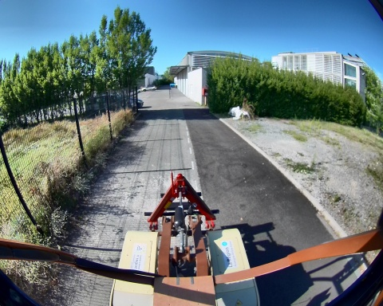
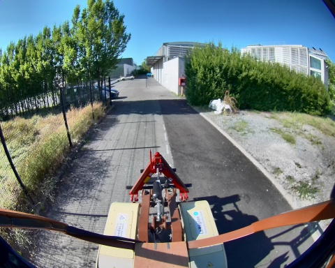
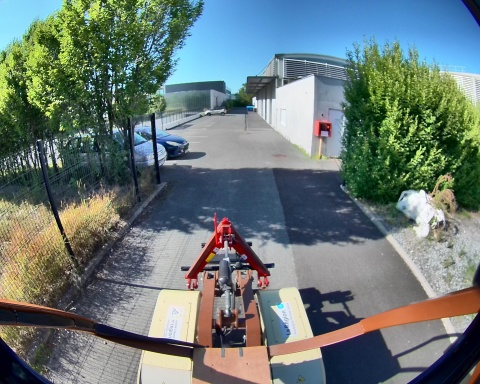
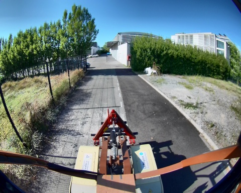
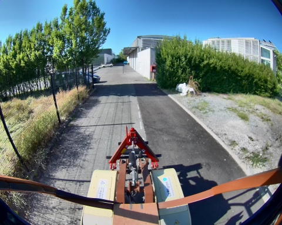
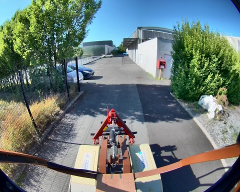

Chemin complet : /data/synchro_data/Innodura/Agrivia/Données/2024_bag/slam_icp_batiment_a

Files: slam_icp_batiment_a_0.db3
Bag size: 4.1 GiB
Storage id: sqlite3
Duration: 98.496866947s
Start: Aug 27 2024 16:54:55.687112794 (1724770495.687112794)
End: Aug 27 2024 16:56:34.183979741 (1724770594.183979741)
Messages: 987
Topic information: Topic: /alpo/camera/image_synchro | Type: sensor_msgs/msg/Image | Count: 492 | Serialization Format: cdr
Topic: /tf_static | Type: tf2_msgs/msg/TFMessage | Count: 3 | Serialization Format: cdr
Topic: /alpo/lidar/pointcloud_synchro | Type: sensor_msgs/msg/PointCloud2 | Count: 492 | Serialization Format: cdr